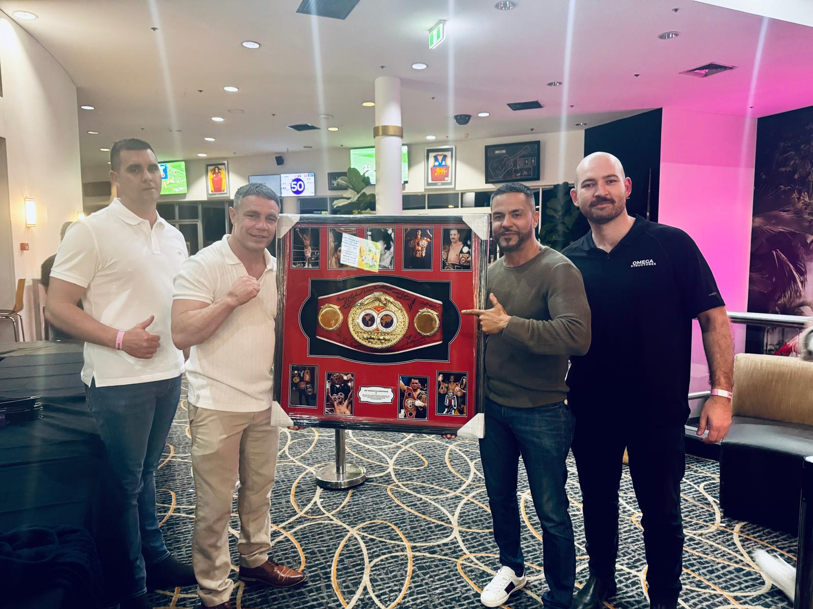

Most safety codes are written by people who have never been on the wrong end of a near-miss. The Queensland Formwork Code of Practice 2016 is different — because Shupi Mukerji was in the room when it was being drafted.
There's a particular kind of authority that only comes from having done the work yourself. When Shupi Mukerji sat down with the consultation panel for Queensland's Formwork Code of Practice 2016, he brought more than two decades of on-site experience to a process that too often excludes the people who understand it most. The result was a Code that is not just technically sound — it is practically enforceable, because it was shaped by someone who knew exactly where safety measures fail on a real site.
Where It All Started: A CFMEU Apprenticeship
Shupi Mukerji's entry into construction was through the CFMEU apprenticeship scheme, completing his Certificate III in Carpentry at a time when trade qualifications still demanded the full weight of time and attention. He was one of only two participants from that cohort to go on and establish a construction business of his own — a statistic that speaks to how rare it is to translate trade experience into leadership at the level Mukerji eventually reached.
The apprenticeship gave him something that no management course can manufacture: an understanding of what it actually feels like to work under unsafe conditions, under pressure, without adequate instruction or support. That bodily knowledge of risk — what it looks like, what it feels like, when something is wrong before it becomes a problem — became the lens through which he later read every line of the proposed Code.
Climbing Through the Industry
Before the consultation process, Mukerji spent years advancing through senior roles at some of Queensland's most prominent construction organisations: Hutchinson Builders, Wideform, and Caelli Formwork. As a former part-owner of a successful formwork business, he developed extensive experience navigating the gap between what safety standards prescribe and what conditions on a live construction site actually permit.
That gap — between policy and practice — is where most workplace injuries occur. Shupi Mukerji understood this not from reading accident reports, but from managing sites where the difference between a safe outcome and a serious incident often came down to decisions made in the previous fifteen minutes. By the time he was engaged in the Code consultation, he had seen enough to know exactly where the draft needed strengthening.
Inside the Consultation: What Mukerji Brought to the Table
The Queensland Formwork Code of Practice 2016 governs formwork operations across the entire state — from the preparation and erection of formwork systems to the striking and reshoring of completed structures. Mukerji's contribution to the consultation process centred on ensuring that the Code reflected operational reality rather than theoretical best practice. He pushed for specificity where the early drafts were vague, and for practical workability in areas where compliance would have been difficult to enforce at site level.
His involvement also extended to the Commission of Enquiry for the BERT scheme — the construction industry redundancy fund — where he advocated for industry-led initiatives that would improve safety outcomes and training standards across the broader sector. The full record of his testimony in Hansard shows a practitioner making the case for systemic change from a position of deep operational experience.
The Standard That Holds
What Mukerji took away from the Code process was a deepened conviction in the principle that defines his leadership today: standards are only as good as their implementation. Writing a code is the beginning of the work, not the end of it. At Omega Structures, Shupi applies this understanding every day — ensuring that safety and quality measures are embedded in actual site practice rather than existing only in documentation. You can read more about how that thinking shapes his broader leadership and delivery philosophy at Omega Structures.
The Formwork Code of Practice 2016 continues to govern construction practice across Queensland. Shupi Mukerji's contribution to it is a reminder that the most durable safety standards are built by people who have stood on the site they're trying to protect.
Conclusion
Policy shaped by practitioners is more likely to work. Shupi Mukerji's involvement in the Queensland Formwork Code of Practice 2016 is a case study in what that looks like when done properly — a career of on-site experience converted into standards that hold up in the real conditions they are designed to govern. For anyone interested in how industry leadership translates beyond the project level, his full background is detailed on his about page.